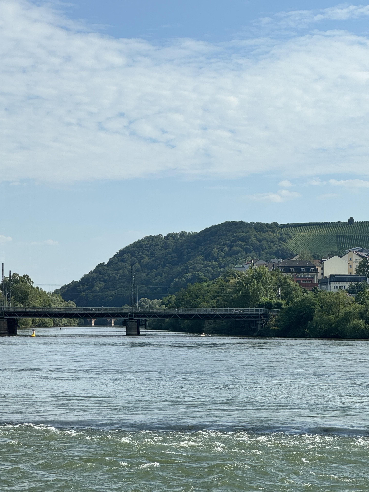
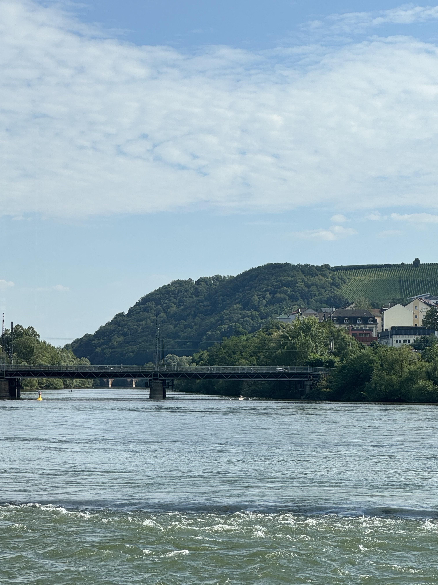
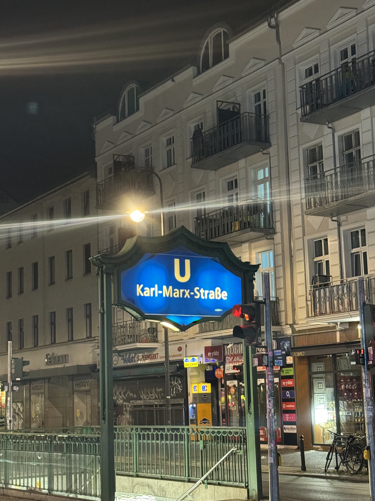
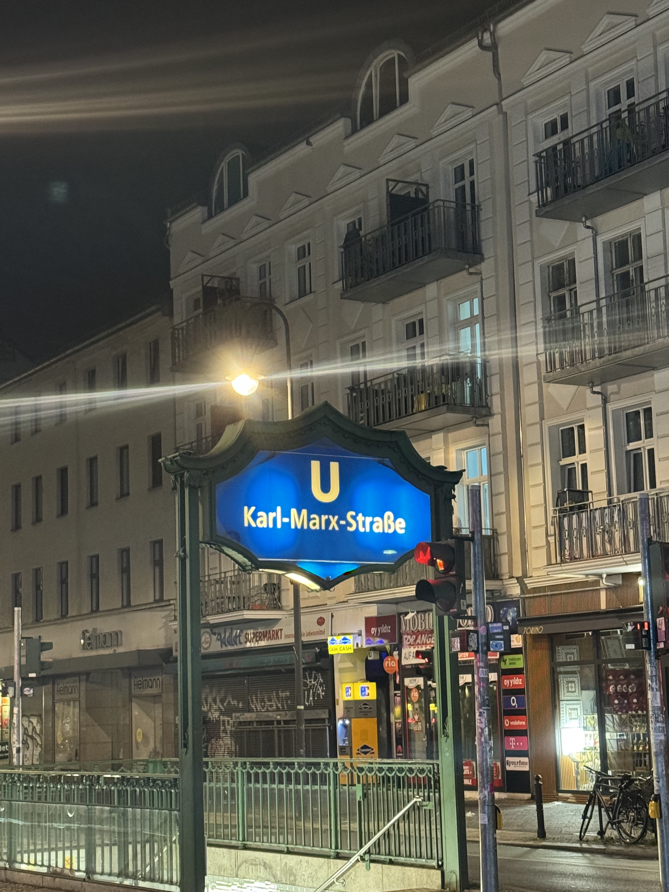

Cologne

My friend Sasha told me I had to check out the incredible cathedral in Cologne while in Germany. It looked like something out of Harry Potter. The striking combination of size and detail was mesmerizing. Also, I was lucky enough to be there on Sunday evening when they had mass. I went inside with my backpack and sat down for the mass as all were invited. It was a remarkable experience.

Outside the cathedral, people drew hearts on the sidewalk with countries’ flags and names on them. People put money on top of their country. It was so interesting because I’d never seen it before, but it was brilliant. I put some money on the USA and Italy.

This is the traditional German food I had in Cologne. It was exactly traditional, with the most pungent mustard I’d ever had and very interesting sausage. I didn’t love it, but I had to eat the whole thing. Most restaurants had all the seating outside in the square so people could smoke and enjoy the bands playing live music in the square for the diners.
Bonn Beethoven Museum


Between Cologne and Mainz, I stopped at the Beethoven Museum at the house he was born in. Beethoven was my favorite composer to play on the piano growing up, and he was a savant. The museum had many of his instruments, pens, letters, notes, and hearing aids. From the outside, it didn’t seem like a museum, just a house on the street, which made it even better.

This was the original famous Beethoven painting which encapsulates Beethoven’s look and personality in his facial expression. The museum’s gallery blew me away.
Mainz

Mainz was a superb small-big city. It was not touristy and had an authentic German feel. There were many corporate businesses, and it was clear people were going to work at them, which is missing in other tourist-heavy cities. One day, I got off the train and walked to the cathedral where a 3-piece band was playing an outdoor concert. Many people were standing around, listening, and drinking. After taking in the concert, I kept walking and sat by the beautiful river as more people enjoyed the evening with their friends. I kept going further down the river and stumbled upon a wine festival. After talking to locals, I found out they have a festival every Tuesday for people to relax after work. I kept walking towards my hotel, found some pickup basketball, and played a few games. It was a wonderful evening that I did not expect. Mainz has a marvelous combination of business, young people, and outdoor activities.
Rüdesheim En Rein
 

I was eating at a table at Tomorrowland with some people from Germany, and I told them I was going to the Mainz area to visit Saulheim and Zornheim, where my family name is from. They suggested I go to Rudesheim en Rein, so I did. It was a small, quaint wine city on the Rhein River with medieval castles. It is known for its narrow streets with grape vines overhanging the streets and, of course, the river. The town was nothing like anything that I’d ever seen before. I went on a boat ride which highlighted the castles and landscape. Rowers appeared on the river’s side channels, which was a treat because my dad has rowed his whole life.

The river was a valley between large hillsides filled with vineyards. They grow riesling grapes and make very dry white wines - not my favorite.
Berlin


Throughout Europe there are sidewalk memorials for holocaust victims outside their houses. At first, this was shocking because of how many there were. It seemed like every 2 or 3 houses there was a plaque for entire families. I missed the memorials in all the previous cities I visited but you can’t miss them in Berlin. I couldn’t believe I’d never heard of this before or learned about it in school. I saw many more of them in Italy later on too.
 

These pictures were from a crazy night I had in Berlin. I went to an underground open mic bar where anyone could go up and play music or sing. I met some people and ended up with some fried rice. The metro stop I used to go home was called Karl Marx stop - it fit the night perfectly.

Berlin has unlimited recent historical monuments from WW2 and the Cold War. One of the most prominent is the East Berlin - West Berlin border crossing, where military and political people could cross the Berlin Wall. It was one of the only places important people could cross the border and avoid the wall. Now, the monument is right in the middle of the city.
I avoided all the famous, crazy, exclusive clubs and settled for a mild one called M-BIA. It was insane compared to the USA, but soft for Berlin. I went with people I met earlier that night and had lots of fun.
Overall
Berlin was a wild place. I had no idea how people make money there. Everyone said all the outcasts from Germany go to Berlin, and everyone else lives elsewhere. I loved the rest of Germany, especially Mainz. Most Germans have a perfect balance of work and enjoying life.